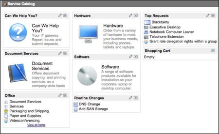
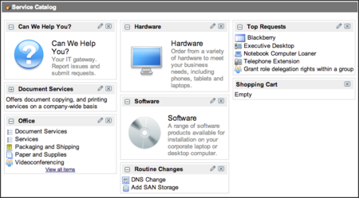
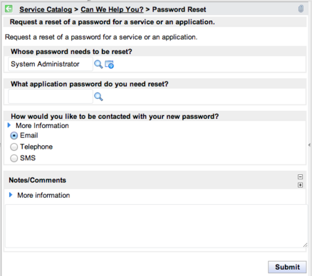
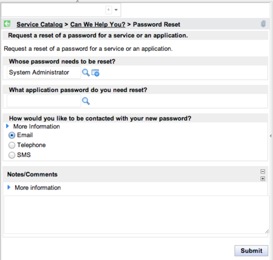

Managing the Homepage for a Catalog
| |
Note: This article applies to Fuji and earlier releases. For more current information, see Manage a Service Catalog Homepage at http://docs.servicenow.com
The ServiceNow Wiki is no longer being updated. Visit http://docs.servicenow.com for the latest product documentation. |
Contents
1 Overview
The homepage for a service catalog provides the primary front end for ordering items within that catalog.
Administrators and catalog administrators can design a homepage by:
- Customizing the catalog homepage.
- Adding, removing, and arranging categories.
- Enabling content types.
- Using catalog properties to provide additional control over behavior and appearance.
- Using renderers to define the appearance of categories.
| |
Note: End users can access the catalog through the customizable user homepage, or with content management pages that use content blocks for categories. |
2 Enabling Content Types for a Catalog
To select content types, also called widgets, to use for a catalog:
- Navigate to Service Catalog > Catalog Policy > Properties.
- In the List of content types (comma-separated) to allow on the catalog homepage (glide.sc.home.filter) property, enter the content types to use in the service catalog.
- To see a list of content types available, navigate to System UI > Widgets.
- The default value is Service Catalog, which includes only service catalog categories. For example, to include service catalog categories and gauges, set the property to Service Catalog, Gauges.
3 Customizing the Homepage for a Catalog
Customize a catalog homepage in a similar way to customizing any homepage.
- Navigate to Service Catalog > Catalog.
- Click + symbol at the top of the page to add a category.
- Select a category in the middle panel of the pop-up screen that appear.
- Click Add here in the location where the category should appear on the homepage.
- [Optional] Repeat steps 3-4 to add more categories.
- Close the pop-up window.
- [Optional] To change a category's location, drag it to the appropriate place.
- [Optional] To remove a category, click the X on the top right of the category header.
- [Optional] Add a shopping cart on the page. For information, see Creating a Custom Shopping Cart.
{kind=link}
4 Defining Mobile Layout
By default, service catalog categories appear on mobile devices in the same order as on desktop devices.
Administrators can configure the layout for categories within a service catalog.
- Navigate to Service Catalog > Mobile Admin > Mobile Layout to display a list of service catalogs.
- Click the lookup icon for the service catalog you want to configure to open the mobile layout details for that catalog.
- Click Edit to select which categories appear on mobile devices, and in which order.
- Select Save to save your changes.
{kind=link}
| |
Note: To return the display to the default desktop layout settings for the portal page associated to that catalog, click the Replace categories with desktop layout related link. |
5 Configuring Content Types Using Properties
You can use service catalog properties to configure content types, also called widgets.
Navigate to Service Catalog > Catalog Policy > Properties to view service catalog properties.
Navigate to System UI > Widgets to see a list of content types available.
5.1 Enabling Content Types for the Service Catalog
By default, only service catalog categories are displayed on the service catalog homepage.
To select additional content types, add these types in a comma-separated list in the List of content types (comma-separated) to allow on the catalog homepage property (glide.sc.home.filter).
For example, to include service catalog categories and gauges, set the property to: Catalog Categories, Gauges.
5.2 Displaying the Expand / Collapse Icon
By default, the expand / collapse icon is not displayed for categories on the service catalog homepage.
To display this icon on the left of each category, set the Toggle whether the expand/collapse icon is rendered for category widgets on the service catalog homepage property (glide.sc.homepage.show.collapse) to true.
| Set to false to hide the expand / collapse icon. | Set to true to display the expand / collapse icon. |
|  |  |
{kind=link}
{kind=link}
Use service catalog properties to configure search and navigation within the service catalog homepage.
Navigate to Service Catalog > Catalog Policy > Properties to view service catalog properties.
6.1 Restricting Search Access
Each catalog homepage provides a search bar to help locate items not displayed on the homepage. By default, any user who can access the catalog homepage can search using this search bar.
To restrict access to this search function by role, use the List of roles (comma-separated) that can search the service catalog property (glide.sc.can_search).
For example, to only allow logged-in users to access search, set this to blank. To remove the search function for all users, set this to None.
| |
Note: Search results only show items that the logged-in user can access. |
6.2 Hiding Search Results From Inactive Categories
By default, search results are returned from all categories, including inactive categories.
To avoid returning results from inactive categories, set the Service catalog searches return items in inactive categories property (glide.sc.search.disabled_cats) to No. For example, when designing a new category, you may want to avoid users seeing search results from this category until you are ready to make it active.
| |
Note: Security constraints may also make a category or catalog item inaccessible. |
6.3 Restricting Search By Item Type
By default, a search field does not appear when viewing order guides, record producers, and wizard launchers.
To define which catalog item types do not show the search field, list these types in the List of class names for catalog items that do not have the search field displayed (glide.sc.item.cannot_show_search) property
For example, to enable searching when viewing record producers, remove sc_cat_item_producer from this list:
| Removing the search bar for record producers. | Enabling the search bar for record producers. |
|  |  |
{kind=link}
{kind=link}
6.4 Enabling Breadcrumb Links
By default, breadcrumbs appear without links when using content management pages as service catalog homepages.
To display these breadcrumbs with links, set the Use links for breadcrumbs rendered in Service Catalog pages accessed via a CMS site property (glide.sc.use_breadcrumb_links.cms) to True. This provides greater navigational control for end users.
6.5 Disabling Search Suggestions
By default, service catalog searches display “Did you mean?” suggestions if a search does not return any results and an alternate spelling or similar recent search does.
To disable these suggestions, set the Specify whether search suggestions should be enabled property (glide.sc.search.suggestions) to false.
See Configuring "Did You Mean?" Suggestions for details about enabling search suggestions for global and knowledge searches.
Contents > Administer > Service Administration > Homepage Administration
Contents > Deliver > IT Services > Service Catalog Management